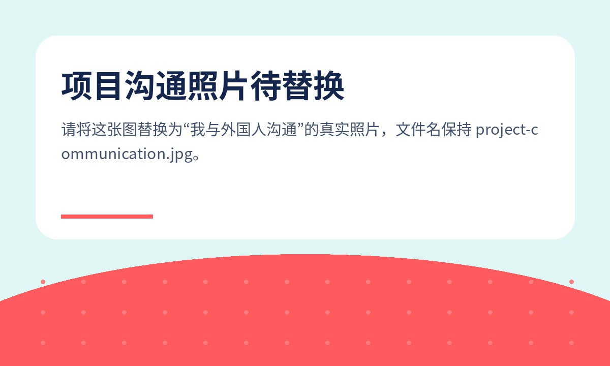

呼吸防护产品创新研究
面向呼吸防护产品5年规划，通过真实作业环境观察、访谈与共创工作坊，将用户洞察转化为产品创新概念。
- 角色
- 主导研究人员
- 产出
- 全英文研究报告、用户画像、体验旅程、痛点象限、创新概念
- 价值
- 6个概念产出，3个纳入研发计划
PROJECTS
围绕用户洞察、客户体验、内容增长与产业项目传播的代表性案例。

面向呼吸防护产品5年规划，通过真实作业环境观察、访谈与共创工作坊，将用户洞察转化为产品创新概念。
围绕供应链金融多触点体验问题，梳理监测、整合、洞察、行动闭环，使体验研究转向持续管理机制。
基于目标客群调研，搭建品牌号、专家号、引流号矩阵，形成内容选题、线索管理、私域孵化和销售跟进闭环。